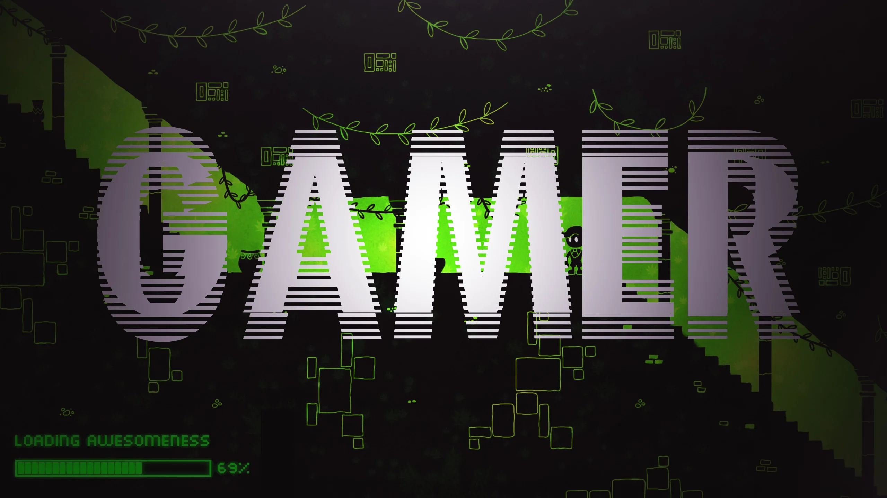

Comunidad de gamers
Este es un blog personal para platicar e informar sobre algunos temas en particular sobre los videojuegos, podrás encontrar información variada que después será actualizada cuanto haya nuevas noticias.
Este es un blog personal para platicar e informar sobre algunos temas en particular sobre los videojuegos, podrás encontrar información variada que después será actualizada cuanto haya nuevas noticias.
El vuelo ligero llega a Microsoft Flight Simulator, pero no como imaginas a día de hoy son muchos juegos los que requieren una gran cantidad de espacio libre en el disco duro, así que es normal encontrarnos con problemas de almacenamiento debido a las grandes exigencias de los últimos títulos. Microsoft Flight Simulator no iba a ser menos, y es que, debido a la gran cantidad de mapas y detalles gráficos, el juego llega ocupar hasta 170 GB de instalación.En Microsoft eran conscientes que el problema de almacenamiento era algo que sufrían los usuarios. Así que se han puesto manos a la obra y han decidido lanzar un parche que va a reducir notablemente el espacio total que ocupa el juego una vez que lo tengas instalado en tu equipo. Ya sea porque tienes instalado muchísimos mods de Microsoft Flight Simulator, o las muchas actualizaciones gráficas que han ido lanzando para el juego, Microsoft Flight Simulator termina ocupando más de 170 GB en tu disco duro.
Una de las señas propias de identidad que el fenómeno Minecraft posee es la de su aspecto pixelado. Pero, ¿alguna vez os habéis preguntado cómo luciria el juego con un estilo de gráficos y animaciones más realista?
Con las Texturas: Un paquete de texturas es un archivo que se utiliza para cambiar las texturas de los bloques, objetos, criaturas y otras cosas del juego. Normalmente son archivos ZIP que contienen imágenes PNG y un archivo PACK.TXT.
Con los shaders: herramientas que ayudan a elevar la calidad visual con nuevos efectos y modificaciones en gráficos.
Trabajo de NVIDIA para mejorar los graficos : Reuters
Microsoft Corp dijo este lunes que utilizará la tecnología de trazado de rayos en tiempo real de Nvidia Corp para ofrecer a los usuarios de su videojuego Minecraft gráficos más realistas en computadores personales.
El trazado de rayos en tiempo real, o la capacidad del procesador de simular cómo los rayos de luz rebotan en una escena visual, ayuda a los videojuegos y otros gráficos de computadora a simular de mejor manera las sombras y reflejos del mundo real.
La semana pasada, Nvidia reportó resultados trimestrales que superaron las estimaciones de Wall Street y dijo que su rentabilidad recibió un impulso de nuevos procesadores gráficos de gama alta para los usuarios de videojuegos.
¿que son? Un juego de PC, también llamados juego de ordenador o juego de computadora en distintos países hispanos, es un tipo de videojuego reproducido en un ordenador personal en vez de una videoconsola o máquina de arcade.
hay muchas ventajas de jugar en pc:
Juegos más baratos
Los juegos de PC son más baratos por varios motivos. Uno de los más importantes es que Sony, Microsoft o Nintendo se llevan un porcentaje por cada juego vendido, el cual no se paga en PC. Este es el motivo de que un juego multiplataforma recién lanzado en PC cueste menos que en las consolas .
Online gratis
En las consolas, jugar online es de pago. Dependiendo de la modalidad que escojamos y de si encontramos alguna oferta, el coste suele ser de unos 45 a 60 euros al año. En 5 años, tenemos un coste de entre 225 y 300 euros adicionales que hay que tener en cuenta en el precio de la consola que con el PC no estaríamos pagando.
Pero tambien puedes emular videojuegos antiguos en pc:Un emulador pone en un sistema Windows todo lo necesario para ejecutar juegos, que habitualmente se llaman ‘roms’ y que contienen todo lo necesario para poder ejecutar el videojuego como si estuviésemos en la máquina original. A mayores, los emuladores proporcionan funcionalidades y controles especiales para conseguir una mayor experiencia: acceso a menús de configuración de la máquina, guardados de partidamuladores hay para casi todas las máquinas y sistemas. Aunque a continuación podrás encontrar los emuladores arcade más populares, es fácil encontrar otros para juegos antiguos de ordenador (retrogaming) o incluso para algunas generaciones de consolas.
Un videojuego de acción es un videojuego en el que el jugador debe usar su velocidad, destreza y tiempo de reacción. Entre los diversos géneros de videojuegos, el género de acción es el más amplio y abarcativo, englobando muchos subgéneros como videojuegos de lucha, videojuegos de disparos en primera persona, beat 'em ups y videojuegos de plataformas.
Muy a menudo, los videojuegos de acción usan la violencia como su principal característica de interacción, más específicamente el combate con armas de fuego o cuerpo a cuerpo.Si bien los objetivos de estos videojuegos varían de videojuego a videojuego, generalmente implican avanzar a través de niveles, eliminando hordas de enemigos y resolviendo problemas. Muchos videojuegos incluyen uno o más "jefes", a veces precedidos por "minijefes". Un minijefe es generalmente el clímax hacia un nivel o serie de niveles, con un jefe al final del juego o periódicamente por el juego, llevando a un "jefe final", el cual derrotar es el objetivo principal.
Un juego de terror es un género de videojuego centrado en la ficción de terror y normalmente diseñado para asustar al jugador.A diferencia de la mayoría de los otros géneros de videojuegos, que se clasifican por su modo de juego , los juegos de terror casi siempre se basan en una presentación narrativa o visual y utilizan una variedad de tipos de juego.
Los juegos de terror de acción son un derivado de los juegos de terror de supervivencia, donde se utilizan más elementos de juegos de acción de los juegos de disparos en primera persona y en tercera persona junto con los temas de terror de supervivencia, lo que los hace más rápidos que los juegos de terror de supervivientes anteriores
El jugador también tiene el reto de encontrar elementos que desbloqueen el camino hacia nuevas áreas y resuelvan acertijos para continuar avanzando en la trama del videojuego. Los videojuegos hacen uso de fuertes temas de terror, como entornos oscuros como laberintos y ataques inesperados de los enemigos.
Los videojuegos de aventura son un género de videojuegos, caracterizados por la investigación, exploración, la solución de rompecabezas, la interacción con personajes del videojuego, y un enfoque en el relato en vez de desafíos basados en reflejos. Es importante observar que este término no tiene relación con las películas y novelas de aventura y no es indicativo del tema o del sujeto que trata. La vasta mayoría de videojuegos de aventura son videojuegos de computadora, aunque los videojuegos de aventura de videoconsola no son desconocidos por lo mucho.
A diferencia de muchos otros géneros de videojuegos, el enfoque en una historia de los géneros de aventura permite tomar prestados elementos de otros medios eminentemente narrativos, como la literatura y las películas. Los videojuegos de aventura abarcan una amplia variedad de géneros literarios, incluyendo fantasía, ciencia ficción, misterio, terror, detectivesca y comedia.
other information:los juegos de aventura son aquellos en dónde el protagonista sigue un sólo camino lleno de drama y acción, el camino del jugador ha sido diseñado específicamente para generar la sensación de la aventura y es linear, es decir sigue una secuencia como en una historia; todos los elementos del juego sirven para apoyar esa particular historia que tiene que terminar en un gran final.